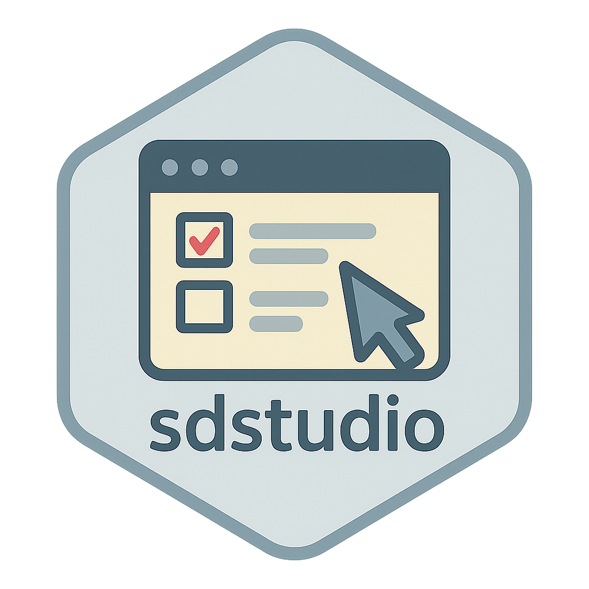

CLAUDE.md
Source:CLAUDE.md
This file provides guidance to Claude Code (claude.ai/code) when working with code in this repository.
Project Overview
sdstudio is an R package providing a Shiny GUI companion for the surveydown survey platform. It transforms code-heavy survey creation into a visual drag-and-drop interface with three main tabs: Build (visual survey creation), Preview (live testing), and Responses (data analytics).
Development Commands
Package Development Workflow
# Standard R package development (use build.R script)
devtools::load_all() # Load package for development/testing
devtools::document() # Generate roxygen2 documentation
devtools::install() # Install package locally
pkgdown::build_site() # Build documentation website
devtools::check() # Check package complianceArchitecture Overview
Core Structure
-
Main Entry:
R/studio.R- Containslaunch()function (only exported function) -
UI Definition:
R/ui.R- Shiny UI with floating button system and three-tab layout -
Server Logic:
R/server.R- Reactive programming with real-time synchronization -
Utilities:
R/util.R- Content processing and helper functions
Key Features Implementation
- Template System: 15 survey templates integrated into Build tab
- Dual-Pane Editor: Visual builder + ACE code editor with real-time sync
- Database Integration: PostgreSQL with GSSAPI encryption and connection pooling
- Responsive Design: Bootstrap 5 with mobile preview modes
Important Development Notes
Package Structure
- Single exported function:
launch()(defined in NAMESPACE) - Uses roxygen2 for documentation generation
- pkgdown website deployment to https://sdstudio.surveydown.org
- MIT licensed with standard R package conventions
Database Integration Patterns
- PostgreSQL connectivity with enterprise security
- Environment variable configuration support
- Connection status indicators and error handling
- CSV export functionality for responses